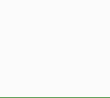

TBD: explain the draw loop.
In the previous lesson you learned how to change the rotation, position, size, and color of shapes by using a variable. In this lesson, you'll use multiple variables to make beautiful rows and columns of shapes that change color. Here are some examples of grids you can make in this lesson.

Tinker
Click ▶Play. You'll see many red rectangles at the top of the canvas.
Try these challenges:
Change one number in the script to create more rectangles closer together.
Change that number again to create fewer rectangles farther apart.
Why do you see multiple rectangles, since there's just one rect command?
Tinker
Click ▶Play. There's one triangle about halfway down the screen.
Try these challenges:
Change one number at a time in the triangle command,
and remember to click ▶Play after each change. Figure out what each number does.
Change the triangle command so that you see multiple triangles,
like you see multiple rectangles.
Tinker
Click ▶Play.
The shapes are different colors, and there are two variables.
Try these challenges:
Change one number in the code to make the colors more varied,
so that they include greens and blues as well as reds and oranges.
Find a spread of colors you like.
Add a fill command so that the triangles
show a different spread of colors from the rectangles.
Find colors that you like.
Tinker
Click ▶Play.
You see 5 rectangles and 5 triangles, and there's a new if
command at the end of the script. Why are there only 5 of each shape?
Try these challenges:
Change one number in the code to make a drawing with exactly 6 rectangles.
Change that number again to make exactly 10 rectangles.
Can you explain what the code is doing?
Tinker
Click ▶Play.
All the shapes are red.
Try these challenges:
In line 1,
we set variable c to 0.
Change 0 to another number and then click ▶Play.
Why does the color change? Find a color that you like.
Find the command towards the end of the script
that changes the varible x.
Add a new command just above it that changes the variable c.
Then click ▶Play.
You should see waves of color, but you'll
notice that they stop after a short time. Why?
As you know from previous lessons,
the largest number you can use for hue is 360.
Type a new line of code so that when c is
greater than 360, it goes back to 0 and
starts over.
You can make some lovely drawings with these commands.
Try making the color waves very slow.
Try adding new shapes.
Make each shape a different color. Have fun!
Tinker
Click ▶Play.
You'll see a grid of red rectangles.
Each row contains 10 rectangles. There are 5 rows.
Try these challenges:
Change one number in the script to make more rectangles in each row.
So instead of 10 rectangles in each row, make 15 or 20 or more.
Change that same number to make fewer than 10 rectangles in each row.
Change one number in the script to make more rows.
So instead of 5 rows, make 8 or 10 or 20 rows.
Change that same number again to create fewer than 5 rows.
Make a drawing where all the rectangles are evenly spaced.
Rectangles should be the same distance from neighbors above, below, and to their sides.
Add a command to make each rectangle a different color.
Add commands to make all rectangles in one row the same color but each row a different color from its neighbors above and below.